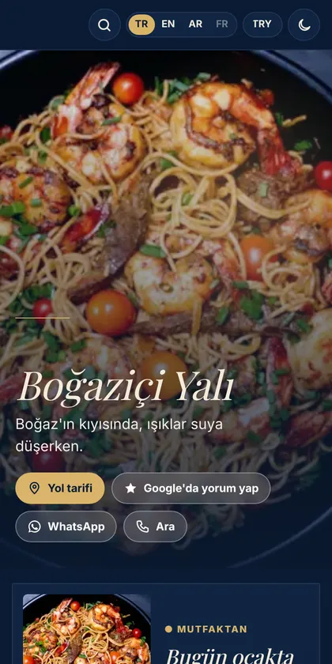

Çoklu para birimi
TRY, USD, EUR, TND.
İstanbul'da tasarlandı. Turist misafirlerin menüyü kendi dilinde okur, fiyatı USD veya EUR olarak yaklaşık görür; ödeme her zaman senin para biriminle yapılır.

TRY, USD, EUR, TND.
Türkçe, İngilizce, Arapça ve Fransızca arayüz.
AuraDigital ekibi İstanbul'da.
AuraDigital ile iletişime geç; İstanbul içindeki kurulum ve NFC kart teslimini birlikte planlarız.